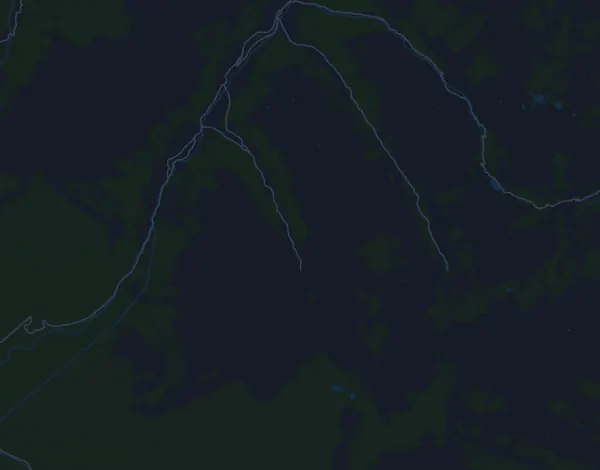

Davos X-Trails (tidigare Swissalpine Davos) – Diamond Run 68 km
- Distans
- 67,8 km
- Höjdmeter
- ↑ 2 856 m
- Högsta punkt
- 2 738 m ö.h.
- Underlag
- Terräng och stig
- Karaktär
- Mycket kuperad
- Start
- kl. 07:00
- Vätskekontroller
- 12
Höjdprofil
Förbered dig med Mila
Mila är en löpcoach i appen. Lägger du till ett lopp i din plan planerar coachen veckorna fram till start efter din form, och ger dig en tidsprognos och en plan för tempo, vätska och energi på banan.

Rätt pass. Rätt dag.
Banan

Om banan
Diamond Run är en fjällbana på 67,8 km med 2856 höjdmeter upp och lika mycket ned, mellan 1534 och 2738 m ö.h. Redan vid km 3,7 börjar den längsta klättringen, 1009 höjdmeter på knappt 14 km med i snitt 7 %. Efter ett utförsparti följer 300 m på 2,4 km vid km 21,8. Mitt i banan ligger de brantaste partierna: 177 m vid km 30,1 och direkt efter 527 m på 3,7 km med 14 % lutning vid km 31,6. Därefter kommer 360 m på 2,4 km med 15 % vid km 40,7. De sista knappt 7 km går nedåt, drygt 300 höjdmeter ner mot målet.
Banan kräver uthållighet i måttlig höjd, ett starkt gående i branta stigningar och lår som tål långa nedförsbackar när de redan är trötta. Bygg långpassen stegvis i kuperad terräng med långa klättringar, och öva kontrollerad utförslöpning. Träna även powerwalk med pulsen som styrning. Styrka för lår och vader skyddar i nedförsbackarna. Energi och dryck behöver övas på långpassen, eftersom loppet troligen tar många timmar.
Beskrivningen är skriven av Milas coach utifrån banans data.
Klättringar
| Börjar vid | Längd | Höjdmeter | Lutning | Topp (m ö.h.) |
|---|---|---|---|---|
| km 0,0 | 3,6 km | 64 m | 1,8 % | 1 600 |
| km 3,7 | 13,9 km | 1 009 m | 7,3 % | 2 606 |
| km 21,8 | 2,4 km | 300 m | 12,6 % | 2 738 |
| km 30,1 | 1,4 km | 177 m | 12,5 % | 2 065 |
| km 31,6 | 3,7 km | 527 m | 14,3 % | 2 578 |
| km 40,7 | 2,4 km | 360 m | 15,1 % | 1 987 |
| km 43,3 | 610 m | 26 m | 4,3 % | 2 005 |
| km 45,4 | 1,8 km | 73 m | 3,9 % | 2 063 |
| km 47,4 | 2,9 km | 48 m | 1,7 % | 2 106 |
| km 57,3 | 2,2 km | 37 m | 1,7 % | 1 880 |
| km 62,6 | 800 m | 25 m | 3,2 % | 1 674 |
Inför start
Vätskekontroller
| Vid | Här finns |
|---|---|
| km 7,9 | ej angivet |
| km 14,4 | ej angivet |
| km 18,4 | ej angivet |
| km 24,9 | ej angivet |
| km 28,9 | vatten |
| km 30,9 | ej angivet |
| km 35,9 | ej angivet |
| km 41,4 | ej angivet |
| km 49,4 | ej angivet |
| km 57,4 | ej angivet |
| km 61,9 | ej angivet |
| km 63,9 | ej angivet |
Starttider
- kl. 07:00
Källa: davos-xtrails.ch, hämtat 15 oktober 2026
Vanliga frågor
När går Davos X-Trails (tidigare Swissalpine Davos) – Diamond Run 68 km?
Davos X-Trails (tidigare Swissalpine Davos) – Diamond Run 68 km går lördag 24 juli 2027. Kontrollera datum och starttid hos arrangören.
Vilken tid startar Davos X-Trails (tidigare Swissalpine Davos) – Diamond Run 68 km?
Enligt arrangören: kl. 07:00.
Hur lång är Davos X-Trails (tidigare Swissalpine Davos) – Diamond Run 68 km och hur många höjdmeter är det?
Loppet är 67,8 km långt med 2 856 höjdmeter uppför och 2 855 nedför. Högsta punkten ligger 2 738 m ö.h.
Hur ser banan på Davos X-Trails (tidigare Swissalpine Davos) – Diamond Run 68 km ut?
Banan räknas som mycket kuperad, med 42 höjdmeter per km i snitt. Den har 11 klättringar på minst 25 höjdmeter; den största börjar vid km 3,7: 1 009 höjdmeter på 13,9 km. Start och mål ligger på samma plats. Underlaget är terräng och stig.
Finns det vätskekontroller på Davos X-Trails (tidigare Swissalpine Davos) – Diamond Run 68 km?
Ja. Arrangören har 12 vätskekontroller: km 7,9; km 14,4; km 18,4; km 24,9; km 28,9 (vatten); km 30,9; km 35,9; km 41,4; km 49,4; km 57,4; km 61,9; km 63,9.
Hur lägger jag upp farten på Davos X-Trails (tidigare Swissalpine Davos) – Diamond Run 68 km?
Sikta på en jämn ansträngning snarare än ett jämnt tempo: låt farten gå ner i uppförsbackarna, hämta tillbaka den när det planar ut, och håll igen de första kilometrarna. De största klättringarna börjar vid km 3,7, km 21,8, km 31,6 och km 40,7. I Mila får du en tempoplan för just den här banan efter din egen form.
Fler lopp som det här
Fler lopp i närheten
- Montreux Trail Festival – MXTREME 100 (102 km)24 juli 2027 · Bex, Schweiz
- Eiger Ultra Trail by UTMB – E101 Ultra Trail17 juli 2027 · Grindelwald, Schweiz
- Trail Verbier St-Bernard by UTMB – X-Alpine (140 km)9 juli 2027 · Verbier, Schweiz
- Engadin Sommerlauf 23 km22 augusti 2027 · Sils, Schweiz
- Jungfrau-Marathon 42 km11 september 2027 · Interlaken, Schweiz
- Swiss Canyon Trail – 111K5 juni 2027 · Couvet, Schweiz
Förbered dig med Mila
Rätt pass. Rätt dag.
Uppgifterna kommer ur banfilen och arrangörens information. Kontrollera datum, starttider och regler hos arrangören.
Mila är inte kopplad till, sponsrad av eller godkänd av arrangören eller loppets sponsorer. Namn och varumärken tillhör sina ägare. Arrangör eller rättighetsinnehavare? Begär ändring eller borttagning